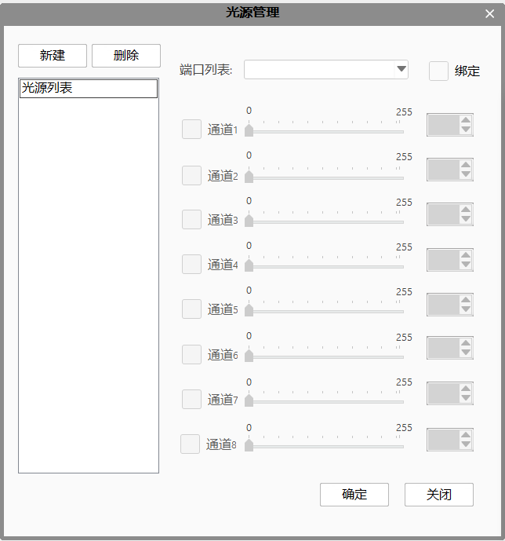

工程中使用的光源控制器和光源，通过功能区-设置里的光源管理，进行参数设置及管理。

光源列表：显示添加的光源信息；
端口列表：选择通信管理里设置为光源通信协议的对应端口；
由于光源控制器和计算机交互是通过通信完成的，所以我们要绑定到相应端口。
此端口需要设置光源通信协议和光源控制器连接的com端口。
绑定：将光源与通信端口进行绑定，由于光源控制后台都是通过通信完成的，所以要进行绑定。
通道：勾选通道，光源亮；取消勾选，光源灭。亮度值可通过拖动滑动条调整，也可手动输入。